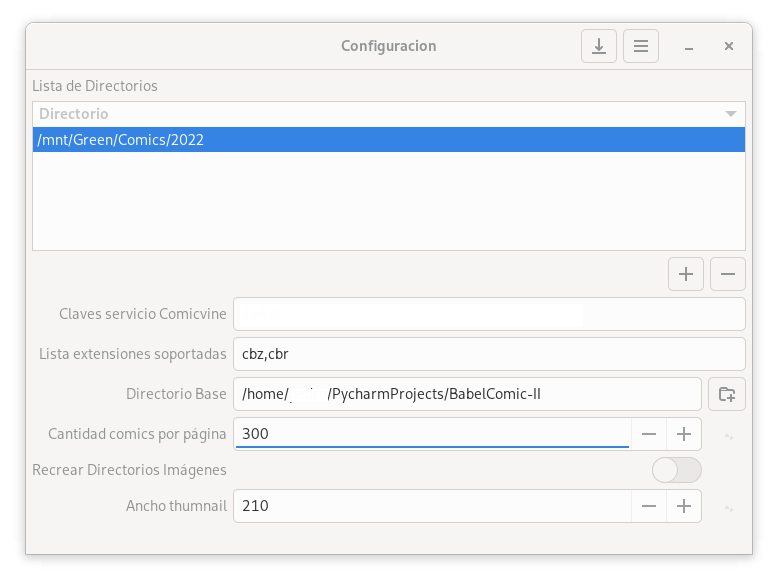

Ventana de configuraciòn general. Acá se configuran opciones que van a afectar el funcionamiento de Babelcomics.

Lista de Directorios
Lista donde podemos cargar los directorios que se quieren revisar al momento de lanzar el proceso de scaneo. Este proceso revisa el contenido de los directorios cargados en la lista y busca archivos con extensión cbz y cbr. Si hay archivos con estás extensiones las carga a una tabla donde se mantienen todos los archivos revisados. Si el o los directorios tienen subdirectorios se mete en ellos para continuar el proceso de escaneo.
Clave Servicio Comicvine
Babelcomic, por un lado mantiene una base de metadata la cual se puede asociar a un archivo cbr o cbz. Con este proceso asociamos la info a un archivo físico y este comienza a formar partes de una colección. Estás colecciones se denominan series en Babelcomics. Además de poder cargar esto manualmente también es posible descargar esta metadata del sitio comicvine. Para esto es necesario tener una clave de acceso que se obtiene al sacar una cuenta en este sitio. Una vez que se tiene está clave la cargamos en este campo y con esto ya tendríamos acceso al servicio provisto por comicvine.
Lista Extensiones Soportadas
Lista separada por comas de las extensiones soportadas. Actualemtne Babelcomics solo soporta CBR y CBZ.
Directorio base
Babelcomic tiene varias carpetas dónde guarda las imágenes de logos de editoriales, covers de cómics, imagen para identificar una serie o la imagen con la que queremos identificar una archivo cbr o cbz. Este valor indica cuál es al path a utilizar para crear estos directorios.
Cantidad Comics por Página
La ventana principal de Babelcomics, muestra los archivos de los comics. A cada archivo se le crea un thumbnail para que representa la caratula de dicho archivo. Por defecto la primera imagen que encuentra dentro del archivo CBR o CBZ es el que se usa para esto. Ahora este valor indica cuantos comics se pueden mostrar en dicha ventana. Mientras mas alto el valor mas archivos va a mostrar pero si no tiene el thumnail calculado lo encola para que en algún momento se calcule.
Recrear Directorio Imágenes
Esta opción hace que al momento de guardar la configuración general, elimine todas las caratulas de los directorios correspondientes, estos son volumenes, editoriales y comics.
Ancho Thumnail
Es el ancho en pixeles de las caratulas de los comics en la ventana principal de Babelcomics.
documentacion tecnica